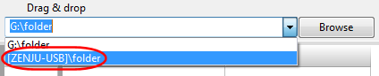

USB memory sticks or external hard disks often get different drive letters assigned when plugged into distinct computers. FreeFileSync offers two solutions to handle this problem:
Option 1: Specify a folder path by using the volume name:
Use [ZENJU-USB]\folder instead of G:\folder where ZENJU-USB
is the volume name of the USB stick which is currently mounted in drive G:\.
Note
It
is not required to look up and enter the volume name manually. Just
select the corresponding entry in the drop down menu.

Option 2: Use a relative directory name:
Use \folder instead of G:\folder
Save and copy synchronization settings to the USB stick: G:\Backup.ffs_gui
Start FreeFileSync by double-clicking on G:\Backup.ffs_gui
The working directory is then automatically set to G:\ by the operating system so that the
relative path \folder will be resolved as G:\folder during synchronization.